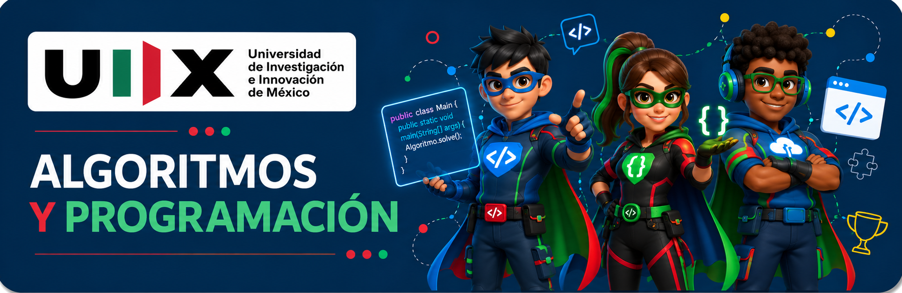

Unidad III · Fortaleza de datos
Persistencia e integración
Ordena estructuras, protege información y conecta POO + GUI + datos. El boss final solo aparece después de seis juegos.
Recursos multimedia locales
Persistencia y datos
Boss final · 350 XP + 🏆
👾 Forja del sistema integrado
Construye una aplicación pequeña que modele un dominio, tenga interfaz y conserve datos. Explica la arquitectura y evidencia una prueba funcional.
Boss oculto
Supera los seis juegos para revelar el desafío final.